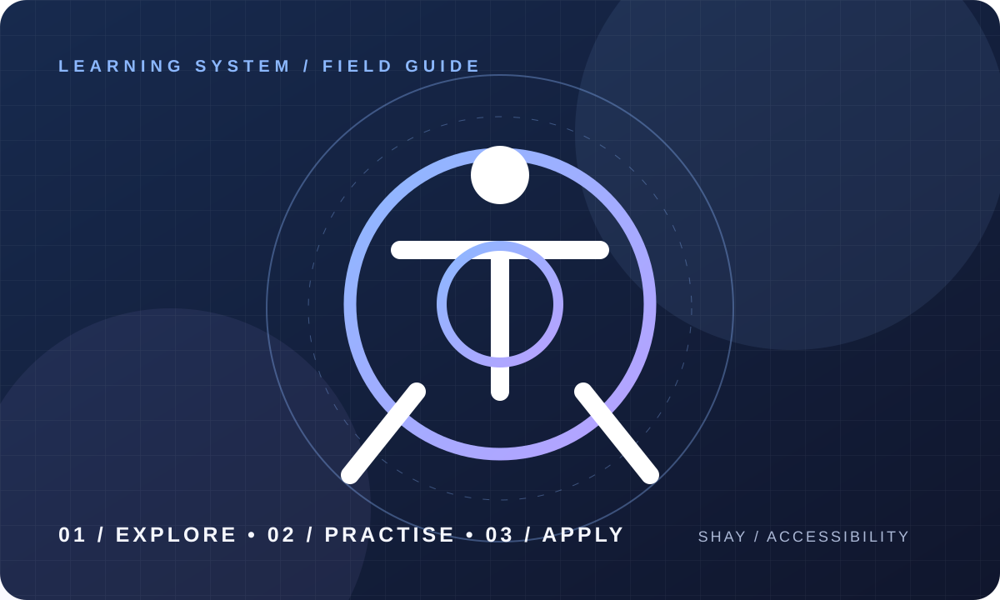
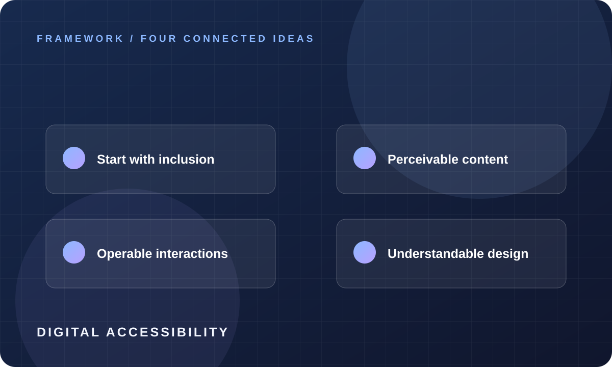
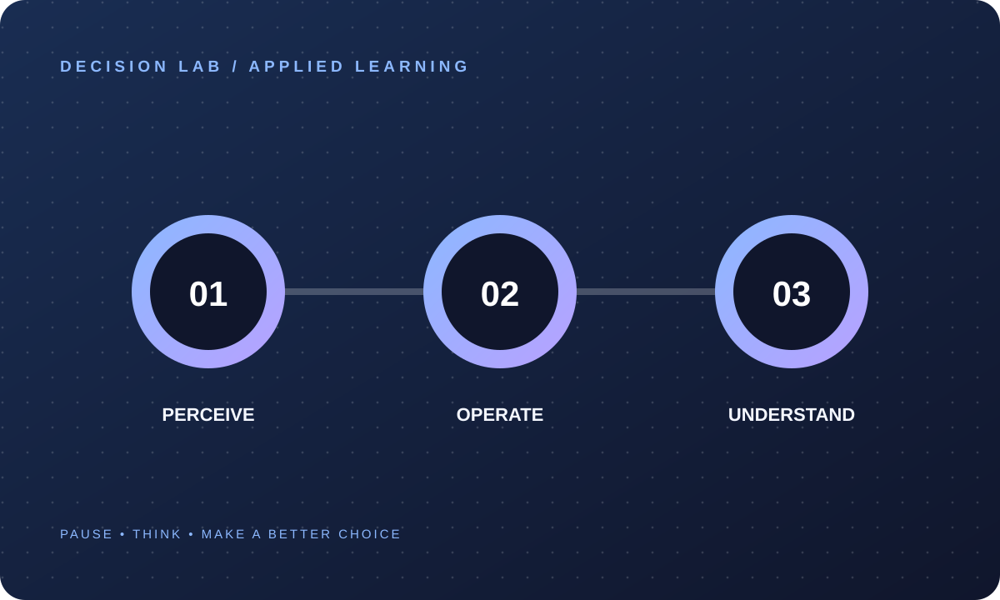

Explain why accessibility belongs throughout the learning design lifecycle.
INCLUSIVE DESIGN / INTERACTIVE HTML COURSE
Digital Accessibility
A visual, practical introduction to the POUR principles and the design choices that make digital learning more inclusive.

VISUAL LEARNING EXPERIENCESHAY-ID / 04
SCROLL TO EXPLORE ↓
01 / COURSE OBJECTIVES
What you will be able to do.
By the end of this learning experience, you should be able to demonstrate these practical outcomes. Use them as a lens while you explore the chapters and make decisions.
Apply perceivable-content practices such as text alternatives, captions and sufficient contrast.
Design operable interactions with keyboard access, visible focus and alternatives to complex gestures.
Improve understandability through plain language, predictable navigation and useful feedback.
Identify robust-content and testing practices, including the limits of automated scans.

02 / YOUR LEARNING MAP
Six steps. One connected journey.
Each chapter builds on the previous one, moving from awareness to a more confident workplace response.
Start with inclusion
Accessibility is part of quality
Make content perceivable
Make information available in more than one way
Make controls operable
Make controls usable without a mouse
Keep experiences understandable
Make language and behaviour predictable
Build robust content
Build for different browsers and assistive technologies
Test and improve
Accessibility is tested, not assumed
03 / EXPLORE THE CONTENT
Learn it. Connect it. Apply it.
Read through each chapter, examine the visual cues and consider how the ideas translate into day-to-day work.
CHAPTER 01 / START WITH INCLUSION
Accessibility is part of quality
Digital accessibility helps people with different abilities, devices and contexts access and use learning. It benefits learners using assistive technologies, people with temporary impairments and anyone working in challenging environments. Accessibility should be considered from the beginning, not added as a final repair task.
- Design for different ways of seeing, hearing, moving and processing information.
- Consider accessibility during needs analysis, storyboarding and development.
- Use applicable standards and organisational requirements as design references.
DESIGN TAKEAWAY
Accessibility improves the learning experience for more people, not only a small group.
Accessibility improves the learning experience for more people, not only a small group.
CONCEPT / 01
CHAPTER 02 / PERCEIVABLE CONTENT
Make information available in more than one way
Information must be available to the senses a learner can use. Provide meaningful text alternatives for informative images, captions and transcripts for media, and sufficient colour contrast. Do not use colour alone to communicate status or correctness. Structure headings and reading order so assistive technologies can interpret the content.
- Write useful alt text for informative images and mark decorative images appropriately.
- Provide accurate captions and transcripts for audio and video.
- Use sufficient contrast and labels that do not rely on colour alone.
DESIGN TAKEAWAY
If a learner cannot perceive the information, they cannot act on it.
If a learner cannot perceive the information, they cannot act on it.
CONCEPT / 02
CHAPTER 03 / OPERABLE INTERACTIONS
Make controls usable without a mouse
Every interactive control should be reachable and usable by keyboard. Focus order should follow a logical sequence, focus must be visible and controls need meaningful labels. Avoid interactions that depend only on dragging, hovering or precise gestures. Give learners enough time and provide predictable ways to pause, resume or recover.
- Test navigation using Tab, Shift+Tab, Enter, Space and arrow keys where relevant.
- Keep focus visible and avoid keyboard traps.
- Provide alternatives to drag-and-drop and complex pointer gestures.
DESIGN TAKEAWAY
A control is not accessible if only a mouse user can operate it.
A control is not accessible if only a mouse user can operate it.
CONCEPT / 03
CHAPTER 04 / UNDERSTANDABLE DESIGN
Make language and behaviour predictable
Learners should be able to understand the information and predict how the interface behaves. Use plain language, descriptive headings, consistent navigation and instructions placed where they are needed. Explain errors clearly and show how to correct them. Avoid unexpected context changes when a control receives focus or a learner makes a selection.
- Write concise instructions and explain unfamiliar terms.
- Use consistent layouts, labels and navigation patterns.
- Provide clear validation messages and actionable feedback.
DESIGN TAKEAWAY
Predictability reduces the effort learners spend figuring out the interface.
Predictability reduces the effort learners spend figuring out the interface.
CONCEPT / 04
CHAPTER 05 / ROBUST CONTENT
Build for different browsers and assistive technologies
Robust content uses semantic HTML and standard controls so browsers and assistive technologies can interpret it reliably. Use headings, lists, buttons, form labels and landmarks correctly. Do not create custom widgets when a native element will work. Check that dynamic updates are announced appropriately and that content remains usable when zoomed or reflowed.
- Use semantic HTML and native controls wherever possible.
- Test zoom, reflow, keyboard and representative assistive technologies.
- Check dynamic status messages and accessible names.
DESIGN TAKEAWAY
Good semantics give assistive technologies a reliable structure to work with.
Good semantics give assistive technologies a reliable structure to work with.
CONCEPT / 05
CHAPTER 06 / TEST AND IMPROVE
Accessibility is tested, not assumed
Automated tools can identify some issues, such as missing labels or contrast concerns, but they cannot judge every experience. Combine automated checks with keyboard review, zoom and reflow checks, screen-reader testing and feedback from people with disabilities. Fix barriers, retest and keep accessibility part of the design lifecycle.
- Run automated checks, then review manually.
- Test complete learning journeys, not isolated screens.
- Include disabled learners in evaluation when feasible and appropriate.
DESIGN TAKEAWAY
Passing a scan is a milestone, not proof that a course is accessible.
Passing a scan is a milestone, not proof that a course is accessible.
CONCEPT / 06
04 / DECISION LAB
What would you do next?
Use the ideas from the course in a short workplace situation. Select the response you would take and review the feedback.

WORKPLACE MOMENT / APPLY YOUR JUDGEMENT
A course uses green highlights for correct answers and red highlights for incorrect ones, with no labels or icons. A reviewer asks whether colour alone is enough.
Choose the most appropriate response.
05 / KNOWLEDGE CHECK
Make the learning stick.
Answer five questions to check your understanding. Submit when you are ready to see your score and review the explanations.
YOUR NEXT STEP
Take the idea
into your work.
Choose one action from this course to apply in your next relevant task or conversation. Learning becomes valuable when it changes what we notice, decide or do.